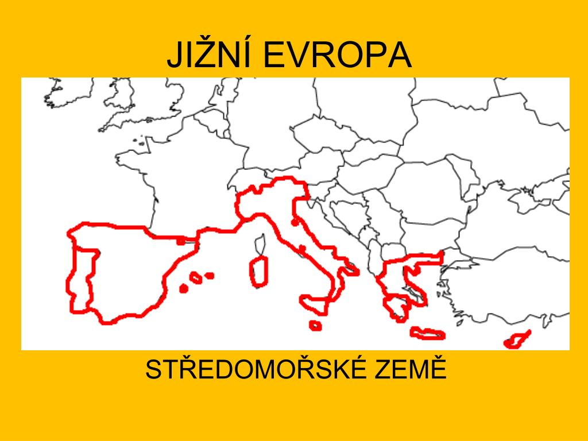

Jižní Evropa

Jižní Evropa je region plný slunce, moře, historických památek a vynikající kuchyně. Najdete zde antické památky v Řecku, renesanční umění v Itálii, temperamentní flamenco ve Španělsku a mnoho dalšího. Je to ideální místo pro ty, kteří hledají kombinaci relaxace, kultury a dobrodružství.
Mezi nejnavštěvovanější země Jižní Evropy patří Itálie, Řecko, Španělsko, Portugalsko a Chorvatsko. Každá z těchto zemí má svůj vlastní jedinečný charakter a nabízí nepřeberné množství zážitků.